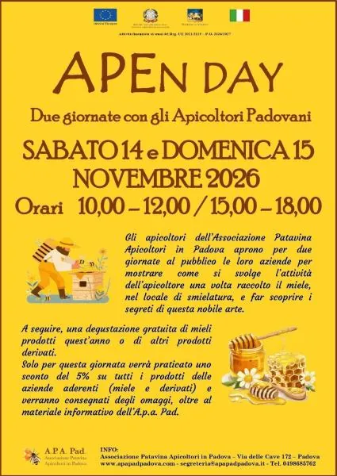

da sab 14 nov a dom 15 nov
APEn DAy
Nelle giornate di sabato 14 e domenica 15 novembre 2026 alcune aziende apistiche aderenti all’A.p.a. Pad., Associazione Patavina Apicoltori in Padova, accoglieranno i visitatori nei loro luoghi di lavoro per mostrare come si svolge l’attività dell’apicoltore una volta raccolto…
 Indicazioni
Indicazioni
- Costi e prenotazioni
- Costo non indicato · Prenotazione non indicata
- Programma
- Programma da verificare. Apri la fonte ufficiale per orari e possibili aggiornamenti.
- In caso di maltempo
- Nessuna indicazione specifica pubblicata.
- Note
- Acquisito automaticamente dalla fonte.
L’EVENTO
Descrizione completa
Nelle giornate di sabato 14 e domenica 15 novembre 2026 alcune aziende apistiche aderenti all’A.p.a. Pad., Associazione Patavina Apicoltori in Padova, accoglieranno i visitatori nei loro luoghi di lavoro per mostrare come si svolge l’attività dell’apicoltore una volta raccolto il miele, e le varie fasi della lavorazione.
A seguire vi sarà una degustazione gratuita dei mieli prodotti quest’anno o di altri prodotti derivati ( come miscele, idromele e articoli per la cura del corpo ).
Un’esperienza educativa per divulgare la conoscenza delle proprietà salutistiche del miele e degli altri prodotti dell’alveare, per stimolarne un consumo consapevole e, non ultimo, scoprire il meraviglioso mondo delle api.
Ecco l’elenco delle aziende apistiche padovane coinvolte in questa iniziativa:
Via Vegro, 9 – Borgo Veneto (PD)
Tel. 3388535452 – ferrucciobsn@gmail.com
Via Cornoleda, 23 – Cinto Euganeo (PD)
Tel. 3934909521 - alvermenegotto@gmail.com
APICOLTURA MIELE PIU’ di GIARIN GLORIA (solo dalle 15.00 alle 18.00)
Via Ponte di Riva, 84 – Cartura (PD)
Tel. 3484752862 giarin@hotmail.com
PACCHIN ALESSIO (solo dalle 15.00 alle 18.00)
Via Garibaldi, 1147 – Costa di Rovigo (RO)
Tel. 3483423488 apacchin@gmail.com
FATTORIA DIDATTICA “A PIEDI SCALZI” (orario del pomeriggio dalle 13.00 alle 16.00)
Via Sambruson, 33 – Mira (VE)
Tel. 3385218191 - apiediscalzifattoria@libero.it
Via Rialto, 1/A – Liettoli di Camplongo Maggiore (VE)
Tel. 3485642835 – apicolturateramama@gmail.com
Facebook Apiteramama – Instagram apicolturateramama
APICOLTURA MAMMA TERESA (solo dalle 10.00 alle 12.00)
Via Monte della Croce, 40 – Sossano (VI)
ABBAZIA DI PRAGLIA (solo dalle 15.00 alle 18.00)
Via Abbazia, 16 – Teolo (PD)
Tel. 0499999300 – abbazia@praglia.it
Info e prenotazioni direttamente all’Azienda, tramite telefono, Whatsapp o indirizzo mail ai contatti indicati
In queste giornate sarà praticato uno sconto del 5%, su tutti i prodotti delle aziende aderenti.
Ai partecipanti verranno consegnati degli omaggi, oltre al materiale informativo fornito dall’Associazione A.p.a. Pad.
A.p.a Pad. Padova 0498685762 – www.apapadpadova.it - segreteria@apapadpadova.it
IL PROGRAMMA
Programma e orari
Appuntamenti raccolti dalle fonti elencate. Dove manca un orario, non è ancora disponibile in questa scheda.
Programma pubblicato
- Dal 2026-11-14 al 2026-11-15
INFORMAZIONI UTILI
Prima di partire
- Controllare la fonte prima di partire.
ORGANIZZAZIONE